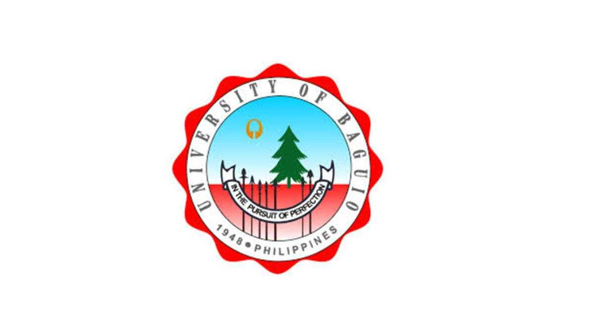

Logo designing is a creative process that involves capturing a brand’s identity and values in a simple yet memorable visual form.
The process begins with understanding the brand’s story, target audience, and competitors to gather inspiration and define the logo’s style.
Designers then move to sketching concepts and developing digital mock-ups, experimenting with colors, typography, shapes, and composition to create a logo that resonates with the intended message.
Throughout the process, the logo is refined with stakeholder feedback and tested to ensure versatility, adaptability, and scalability across different mediums and sizes.
Key principles in logo design include simplicity to maintain clarity and memorability, use of appropriate color palettes that reflect the brand personality, and ensuring the logo is scalable so it looks good in various sizes.
Typography choice is important to complement the design without overpowering it, and originality is critical to distinguish the brand from competitors.
Balance, proportion, and visual harmony are also essential to creating a compelling logo that works well in different contexts such as websites, business cards, and billboards.
Research and feedback play a significant role in refining the design before finalizing it with professional design tools.

Topic 2: University of Baguio
The University of Baguio (UB) is a private higher education institution located in Baguio City, Philippines. It was founded on August 8, 1948, initially as the Baguio Technical and Commercial Institute by Fernando Gonzaga Bautista and Rosa Castillo Bautista. The university attained its university status in 1969 and has since grown into a large-sized educational institution with an enrollment range of approximately 15,000 to 19,999 students. UB is recognized by the Commission on Higher Education of the Philippines and offers a wide array of academic programs leading to bachelor's degrees and other higher education qualifications. The university prides itself on its motto, "In the Pursuit of Perfection," and its colors are red and gray. It provides academic and non-academic support services including a library, sports facilities, scholarships, and financial aid to its students.
UB emphasizes academic excellence, relevant social skills, and ethical values in its mission to empower professionals in a global community. The university is known for its balanced quality education in a nurturing and enjoyable learning environment. It has a strong commitment to competence, integrity, and service, aiming to produce graduates who are skilled, ethical, and community-oriented. Situated high in the Cordillera mountains, UB also embraces a culture of innovation and excellence, supported by its tagline, "It's All Up Here!" The university has a rich history, including resilience through challenges such as the 1990 Luzon earthquake, and has been granted autonomous status, reflecting its recognized quality in Philippine higher education.
Topic 3: The Step by Step Process
Designing a logo begins with thorough research and understanding of the brand. Start by gathering information about the company’s mission, target audience, and competitors. This helps in establishing the logo’s tone and style. Next, brainstorm ideas and sketch rough concepts focusing on simplicity, relevance, and uniqueness. Choose elements like color, typography, and imagery that best represent the brand’s identity. Refining these initial sketches leads to digital drafts using design software, where you can experiment with shapes, layouts, and color schemes.
Once you have several polished digital versions, seek feedback from stakeholders and target users to gauge the logo’s effectiveness and appeal. Make revisions based on the input, ensuring the logo remains versatile and recognizable at different sizes and applications. Finally, finalize the design by creating various file formats suitable for print, web, and branding materials. Document the logo’s specifications and usage guidelines to maintain consistency across all brand communications.
Music Track: Break of Dawn by Avanti
Source: https://freetouse.com/music/avanti/break-of-dawn